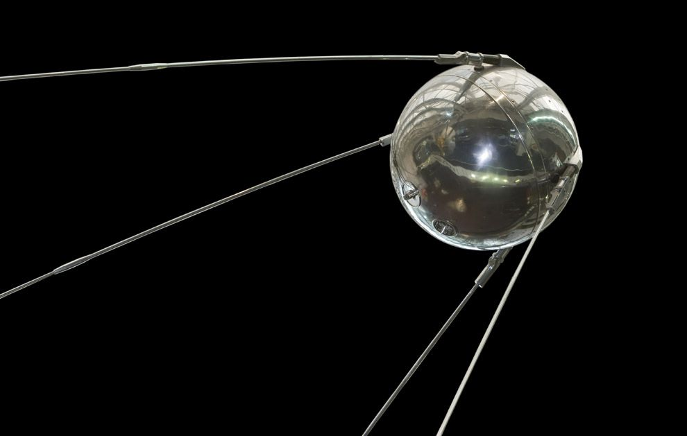
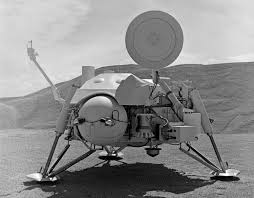
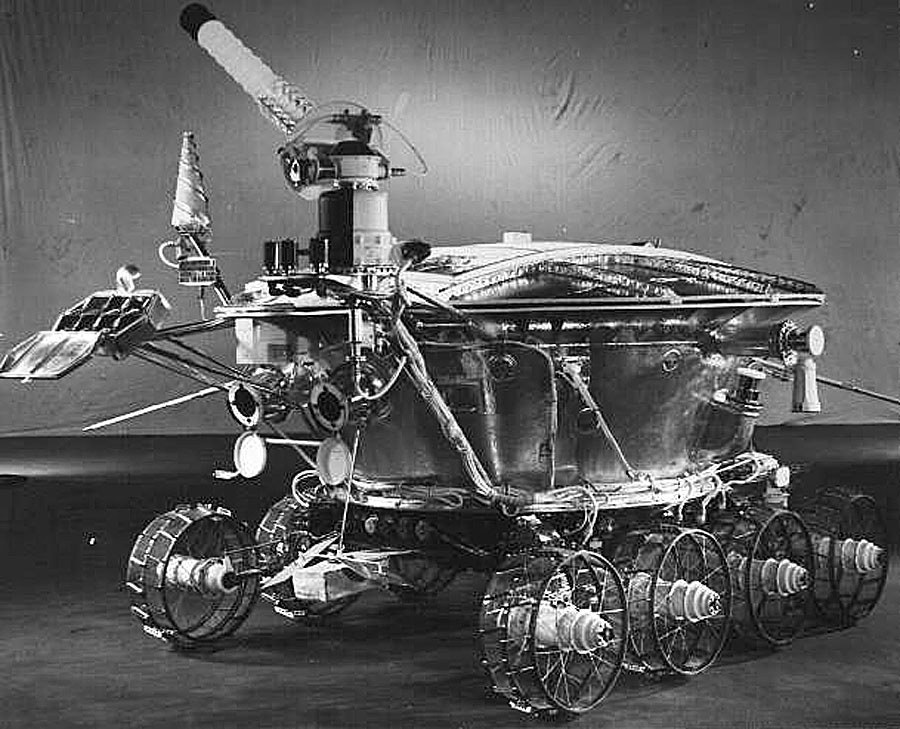
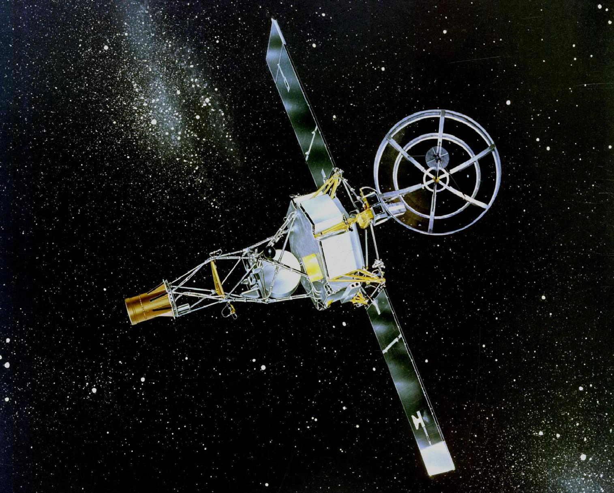

1960's
- Sputnik 22 (USSR) launched for an intended Mars flyby. Although the rocket that launched the spacecraft had a fatal issue and the spacecraft was destroyed soon after it achieved Earth orbit. NASA's Mariner was the first to fly by Mars and sent 21 photos of the Red Planet back to Earth.
- NASA's Mariner was the first to fly by Mars and sent 21 photos of the Red Planet back to Earth.

1970's
- NASA's Viking 1 and Viking 2 both arrived at the Red Planet in 1976 sending their lander to the surface while the orbiter remained working above. The Viking program was the first extended exploration of Mars.
- The Viking missions revealed that the composition of Mars was almost identical to Earth.

1980's
- The Soviet Union made two attempts to reach one of the moons of Mars but both missions failed.

1990's
- NASA's Mariner was the first to fly by Mars and sent 21 photos of the Red Planet back to Earth.
- NASA's Mars Observer launched to the planet on Sept. 25, 1992. The spacecraft was lost just before it was supposed to achieve Mars orbit on Aug. 21, 1993. This was a loss of an estimated $813 million.
- NASA's Mars Global Surveyor (MGS) left Earth in 1996, and arrived at Mars in 1997. Its mission was extended several times until NASA lost contact with it in 2006.

2000's
- NASA's Mars Odyssey launched in 2001 and successfully arrived at the Red Planet. The orbiter is still conducting its extended science mission. It broke the record for the longest-serving spacecraft at Mars in 2010.
- NASA's two rovers, Spirit and Opportunity, were sent to the surface of Mars in 2004. Each discovered ample evidence that water once flowed on the Red Planet.
- NASA launched a stationary lander called Mars Phoenix, which arrived at Mars in 2008, finding water ice beneath the surface.
- NASA's more powerful rover, called Curiosity, arrived at Gale Crater in 2012 to search for signs of habitable environments. It discovered previously water-soaked areas, deteced methane on the surface, and found organic compounds.